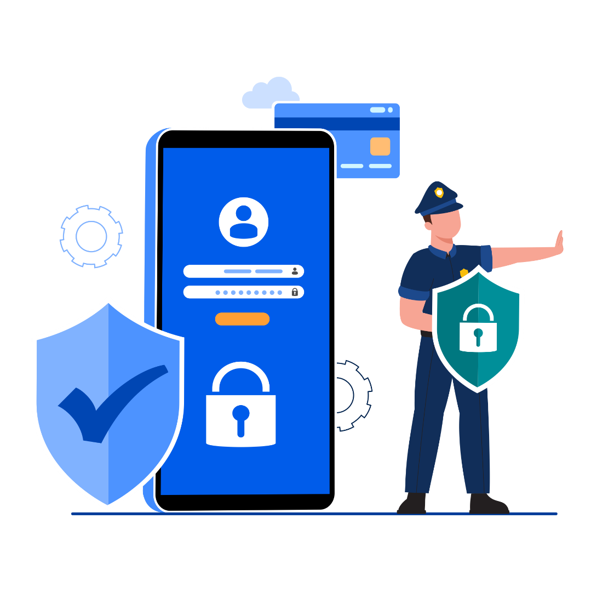
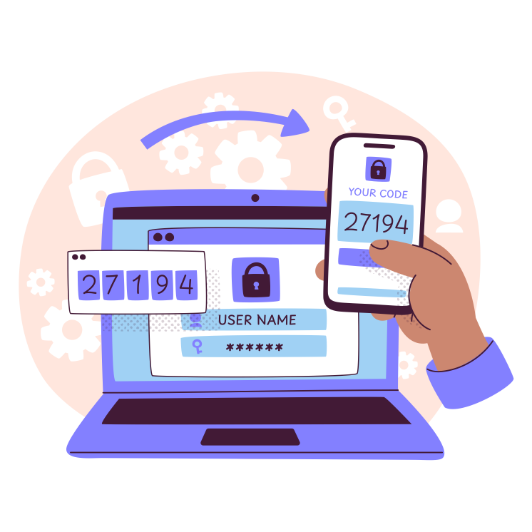
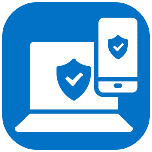

O que é Segurança Digital?
Muitas vezes nos deparamos com mensagens, e-mails ou links suspeitos na internet. Por isso, a atenção deve ser redobrada e, por esse motivo, existe a Cibersegurança. Por uma ampla gama de funções e atitudes, podemos melhorar a segurança dos nossos aparelhos e garantir não venhamos a sofrer nenhuma situação inconveniente e, muitas vezes, custosa.
Você sabe se proteger?
O descuido pode ser muitas vezes uma dor de cabeça para quem não se previne. Por isso ai vai algumas dicas que podem te ajudar:
⚠️Usar senhas curtas e simples, como "123456" ou "senha123", é como trancar a porta com um cadeado de brinquedo. Senhas fracas podem ser quebradas por programas em segundos! Sempre que possível utilize senhas que combinem letras (em maiúsculo e minúsculo), caracteres especiais, números e símbolos.
❓ Sabe como evitar aqueles sites suspeitos? Procure sempre utilizar sites que possuem o HTTPS, aqueles que começam com "https.//" e possuem um cadeado de segurança do lado. Os mesmos criptografam seus dados durante o envio, evitando que eles caiam na mãos de pessoal mal-intencionadas.
📩Recebeu uma mensagem falsa? Como identificar? As vezes é bem simples. Evite responder, ou clicar em links, enviados por SMS, WhatsApp e/ou E-mail por desconhecidos. Muitas vezes isso é relacionado ao "phishing", uma tática para te "fisgar" fazendo com que você envie seus dados pessoais e financeiros por meio de mensagens como "Parabéns, você ganhou [...]". Sempre verifique toda e qualquer mensagem e/ou link com muita atenção - em alguns casos, hackers também utilizam contas de amigos/familiares que foram hackeadas para te fisgar.
Conhece a Autenticação de Múltiplos Fatores?
As vezes nem todo esse cuidado é o bastante. Por isso, para proteger suas contas, muitos sites e aplicativos oferecem a autenticação em múltiplos fatores - referenciado como MFA -, que possibilita uma camada extra de proteção. Pode ter certeza, muitas vezes ela é essencial.
❓ Mas enfim, o que é e como funciona a autenticação de múltiplos fatores? É bem fácil e simples. Com o MFA ativado na sua conta, é necessário um passo a mais do que a sua senha para obter acesso a conta pretendida. Quem desejar "logar" na sua conta, precisará também de um código que será enviado por SMS, e-mail ou um aplicativo autenticador. Assim, caso haja alguém mal-intencionado tentando logar na sua conta, não poderá acessar a mesma tão facilmente - uma vez que sem o código, o acesso é muito dificultado.
🚨Procure utilizar a autenticação em múltiplos fatores - também referenciada como "em duas etapas" - nas contas mais importantes suas (e-mail, redes sociais, bancos, aplicativos). Isso terá uma capacidade de reduzir significativamente de alguém roubar contas e seus dados - além de evitar uma bela dor de cabeça.
Fique atento! Todo cuidado é pouco!
Há muitos outros cuidados que você deve ter e camadas de proteção que você pode colocar. Por exemplo, se você ativou a verificação em duas etapas, não compartilha suas senhas e atualiza seu celular/computador regularmente - você já está na frente de muitos, e mais protegido do que eles.
Ainda assim, muitos outros cuidados são necessários. Quer mais exemplos? Não use qualquer Wi-Fi público - muitos deles podem ter malwares, vírus, etc... Evite compartilhar o mesmo computador com sua família quando estiver acessando contas importantes. Essa situação já gerou muitos problemas até para famosos, como o Peter do canal Ei Nerd! que foi hackeado, mesmo não sendo ele que tivesse clicado em um link suspeito. O malware, proveniente de um "Cyberpunk 2077 grátis", acabou fazendo com que a conta do Peter no YouTube fosse hackeada por estar "logada" no computador que o baixou.
❓ Continua com algumas dúvidas? O site do gov.br oferece muitas respostas para dúvidas sobre golpes digitais e medidas de proteção, como o MFA. Se possível procure o mesmo para receber mais informações. Não deixe de se atualizar e garanta sua proteção.
📝 Quer entrar em contato? No seu canto superior esquerdo você poderá ver o símbolo de um formulário, clique nele para entrar em contato conosco. Preencha o formulário e responderei assim que possível.
❗ Quer saber mais sobre mim? Também no seu canto superior esquerdo haverá um símbolo de informação, clique nele para saber mais sobre mim e sobre este projeto.